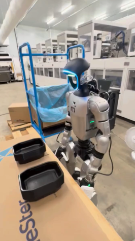
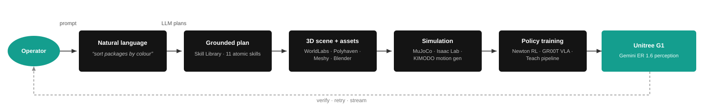

Kimodo locomotion — dynamic motion
On-robot validation of the Kimodo policy after sim-to-real tuning.
End-to-end commissioning of a Unitree G1 humanoid in Brussels: hardware assembly, ROS 2 software integration (MuJoCo, IsaacLab), sim-to-real locomotion (Kimodo, cap-x), and a text-to-3D pipeline for rapid simulation-scene prototyping.
On-robot validation of the Kimodo policy after sim-to-real tuning.
GR00T N1.7 finetuned on 80 teleop demonstrations and deployed on the G1.
Whole-body manipulation behaviour deployed on the G1.
Pick-and-place rollouts in simulation prior to real deployment.
Natural-language scene generation inside Isaac Sim for humanoid testing.
Hardware assembly and initial bring-up in Brussels.

